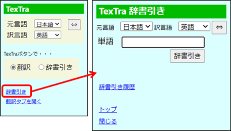
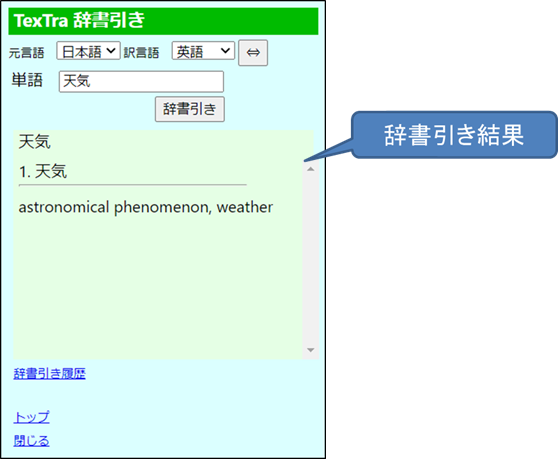
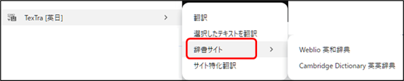
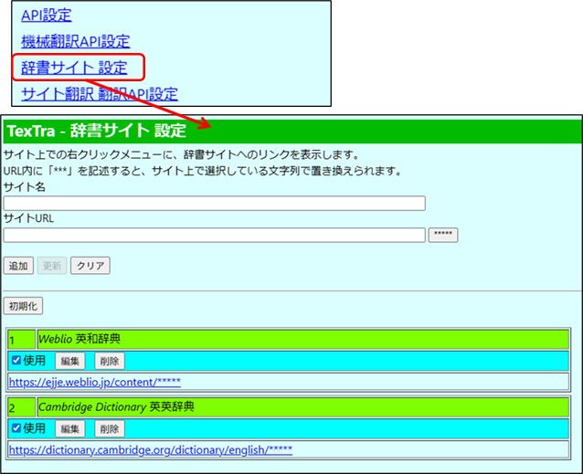

辞書引き
入力したテキストを辞書引きします。


・ 辞書サイト表示
サイト上で選択したテキストについて、
辞書サイトを開き、テキストについての情報を表示します。

設定画面
他のサイトをご利用したい場合、
設定を追加してください。
メニュー＞辞書サイト設定

サイトURL内に「*****」を記述すると、ブラウザ上で選択した文字列がその部分に入ります。
(例）
「サイトURL」に「https://dic.com/?target_word=*****」を設定
右クリックメニューからTexTra
> 辞書サイト >
追加したサイトを押すと、
ブラウザ上で「apple」という文字列を選択している場合、
「https://dic.com/?target_word=apple」が別タブで開かれます。